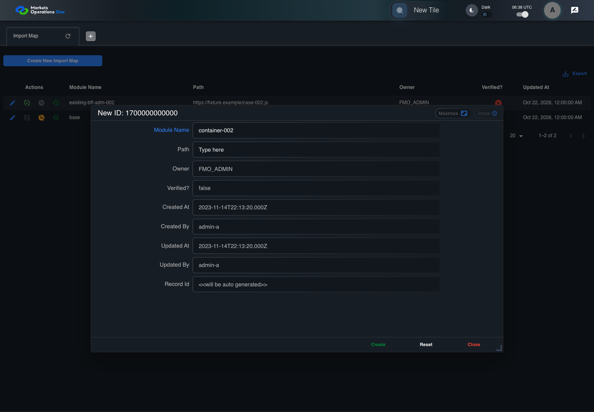

BFF-ADM-002 current BFF administration through actual UI
PASS · application/run-072/bff-adm-002-current-bff-administration-through-actual-ui-5be8128d70c1-attempt-1 · ACTUAL_APPLICATION_LOCAL_SERVICES
Actual current React and exact-current BFF admin controllers/services/JPA with actual migration DDL in disposable PostgreSQL. Controlled OUD/EMS2 identities and local Spring bootstrap. Fixture SQL seeds/mutates isolated records; service errors are actual database errors. Undefined agreed messages remain unresolved acceptance.
2026-10-22T06:38:35.833Z to 2026-10-22T06:38:39.530Z
Assertions and result · Artifact manifest · Exact run inputs and source hashes
Result SHA-256:933d06d264bd68f696dff664b2954ed592e2f99d642e23d5dae807c680882c07Machine observations
- actual-identity-projection.json
7e564a686025f82e89a623549952cfe745ceab0bd273c593e3dfbccbb22e8996 - baseline-inputs.json
caab39fe0cfd61404fd564b523c5fa63d763dcbd6647db3df47a94981b37e70c - bff-boundary.json
fb956439be735a2312bcf0075e211aaff87a8cce246c602999bcf9e989e93154 - committed-ui-submission-comparisons.json
bfe32555530a6714d489f15a778619db1e5eb96b531b14e64a7ccd8505351a03 - creation-clock.json
43c4cc5bd6a0c1c597a0077cd8809904e3c7a16dd544843c9e891ee9806b984b - fixture-step-4.json
284a5a4847d98b8ac2049950c253b12d72d350188e4fcc6b4a30017e6340311a - fixture-step-5.json
d7dde1b723acb5a81f2cfbba22d22b3c1d731f0c95dc9cdc8258afcdd1bba656 - initial-persisted-records.json
da10f794363bb89326d328f2a1cd07a516265c91079a26d15a6332cdf930979b - persisted-after-submit.json
00e2aa95457d81bd8698b56e964f19841d9295bf5560e8f746291be717c6dc33 - ui-origin-bff-requests.json
2fa5db45bafd898a698102d3e26305ed12d44642359a9c67f62cf38b594861f5
Screenshot capture: CAPTURED. Named frames: 14.
Step screenshot bindings: COMPLETE. 13/13 canonical steps have execution screenshots.
Bindings measure structural coverage only. They do not establish screenshot content quality or relevance.
Screenshot content review: NOT_REVIEWED. Recorded context: 0/14 frames. Identical image bytes: 6 repeated frames. Recorded context does not establish human visual review.
Canonical step timeline
Given Admin A uses subject "admin-a" with role "FMO_ADMIN" in an isolated authenticated browser
Execution: PASSED.1. step-01 Visible state after step 1: Given Admin A uses subject "admin-a" with role "FMO_ADMIN" in an isolated authenticated browser
2026-10-22T06:38:37.358Z · 1440×1000
Step: /Users/lushevol/code/github/ratan-release-impact/workbench/tasks/ui-test-coverage-20261022/test-cases.md:14693
SHA-256:395e7044ab5be64c15be67c87248f52b44f43683509101a3cbbc8d32bd79c4d3And the controlled Import Map fixture records the initial grid rows and persisted values
Execution: PASSED.
2. step-02 Visible state after step 2: And the controlled Import Map fixture records the initial grid rows and persisted values
2026-10-22T06:38:37.482Z · 1440×1000
Step: /Users/lushevol/code/github/ratan-release-impact/workbench/tasks/ui-test-coverage-20261022/test-cases.md:14694
SHA-256:395e7044ab5be64c15be67c87248f52b44f43683509101a3cbbc8d32bd79c4d3Image bytes match frame 1. An unchanged image can be valid for consecutive assertions. This match does not establish correct step content.
And the controlled creation clock returns 1700000000000 milliseconds
Execution: PASSED.
3. step-03 Visible state after step 3: And the controlled creation clock returns 1700000000000 milliseconds
2026-10-22T06:38:37.524Z · 1440×1000
Step: /Users/lushevol/code/github/ratan-release-impact/workbench/tasks/ui-test-coverage-20261022/test-cases.md:14695
SHA-256:395e7044ab5be64c15be67c87248f52b44f43683509101a3cbbc8d32bd79c4d3Image bytes match frame 2. An unchanged image can be valid for consecutive assertions. This match does not establish correct step content.
And the baseline fixture data defines "Module Name" as "container-002"
Execution: PASSED.4. step-04 Visible state after step 4: And the baseline fixture data defines "Module Name" as "container-002"
2026-10-22T06:38:37.556Z · 1440×1000
Step: /Users/lushevol/code/github/ratan-release-impact/workbench/tasks/ui-test-coverage-20261022/test-cases.md:14696
SHA-256:782d1362aa763791b956a3905426549708d871b8a6d98ea43d9875eff33c29b3And the baseline fixture data defines "Path" as "https://fixture.example/case-002.js"
Execution: PASSED.
5. step-05 Visible state after step 5: And the baseline fixture data defines "Path" as "https://fixture.example/case-002.js"
2026-10-22T06:38:37.590Z · 1440×1000
Step: /Users/lushevol/code/github/ratan-release-impact/workbench/tasks/ui-test-coverage-20261022/test-cases.md:14697
SHA-256:395e7044ab5be64c15be67c87248f52b44f43683509101a3cbbc8d32bd79c4d3Image bytes match frame 3. An unchanged image can be valid for consecutive assertions. This match does not establish correct step content.
When Admin A clicks the button labeled "Create New Import Map" on the Import Map administration page
Execution: PASSED.6. step-06 Visible state after step 6: When Admin A clicks the button labeled "Create New Import Map" on the Import Map administration page
2026-10-22T06:38:37.761Z · 1440×1000
Step: /Users/lushevol/code/github/ratan-release-impact/workbench/tasks/ui-test-coverage-20261022/test-cases.md:14698
SHA-256:6f580ce88e9edc875d75b2083fe9b9342eb7ca85f47839b56d353c658c24a6baThen the dialog titled "new ID: 1700000000000" is visible on the Import Map administration page
Execution: PASSED.7. step-07 Visible state after step 7: Then the dialog titled "new ID: 1700000000000" is visible on the Import Map administration page
2026-10-22T06:38:37.811Z · 1440×1000
Step: /Users/lushevol/code/github/ratan-release-impact/workbench/tasks/ui-test-coverage-20261022/test-cases.md:14699
SHA-256:e9fa7c36f9a454a2c8590babe893ad7d755a62d7a827474fbd0c3efc36adb39eWhen Admin A fills the textbox labeled "Module Name" with "container-002" in dialog "new ID: 1700000000000"
Execution: PASSED.
8. step-08 Visible state after step 8: When Admin A fills the textbox labeled "Module Name" with "container-002" in dialog "new ID: 1700000000000"
2026-10-22T06:38:38.232Z · 1440×1000
Step: /Users/lushevol/code/github/ratan-release-impact/workbench/tasks/ui-test-coverage-20261022/test-cases.md:14700
SHA-256:9ece581b9cdab0ad1e980a526f01f1cfe738aa98d95a083c9769fb449055c013And Admin A fills the textbox labeled "Path" with "" in dialog "new ID: 1700000000000"
Execution: PASSED.9. step-09 Visible state after step 9: And Admin A fills the textbox labeled "Path" with "" in dialog "new ID: 1700000000000"
2026-10-22T06:38:38.720Z · 1440×1000
Step: /Users/lushevol/code/github/ratan-release-impact/workbench/tasks/ui-test-coverage-20261022/test-cases.md:14701
SHA-256:2deba2662f12e0791f363ea66cc45d98471d64fae1d6aedfee503610c6f650abAnd Admin A clicks the button labeled "Create" in dialog "new ID: 1700000000000"
Execution: PASSED.10. step-10 Visible state after step 10: And Admin A clicks the button labeled "Create" in dialog "new ID: 1700000000000"
2026-10-22T06:38:38.971Z · 1440×1000
Step: /Users/lushevol/code/github/ratan-release-impact/workbench/tasks/ui-test-coverage-20261022/test-cases.md:14702
SHA-256:d3182c85f45544cf5857e6be1a783553f1621cab78d671d244c650d50a785854Then the dialog titled "new ID: 1700000000000" remains visible on the Import Map administration page
Execution: PASSED.11. step-11 Visible state after step 11: Then the dialog titled "new ID: 1700000000000" remains visible on the Import Map administration page
2026-10-22T06:38:39.028Z · 1440×1000
Step: /Users/lushevol/code/github/ratan-release-impact/workbench/tasks/ui-test-coverage-20261022/test-cases.md:14703
SHA-256:61e57d658a01363be110ee71cfb7306799972d474fbe902cf0027fd59cbb340dAnd the alert with severity "error" in the portal snackbar contains the exact text "Please provide the value for the Module Name or Path."
Execution: PASSED.
12. step-12 Visible state after step 12: And the alert with severity "error" in the portal snackbar contains the exact text "Please provide the value for the Module Name or Path."
2026-10-22T06:38:39.094Z · 1440×1000
Step: /Users/lushevol/code/github/ratan-release-impact/workbench/tasks/ui-test-coverage-20261022/test-cases.md:14704
SHA-256:61e57d658a01363be110ee71cfb7306799972d474fbe902cf0027fd59cbb340dImage bytes match frame 11. An unchanged image can be valid for consecutive assertions. This match does not establish correct step content.
And the Import Map data grid with column "Record Id" row identifiers and loaded field values equal the initial grid snapshot on the Import Map administration page
Execution: PASSED.
13. step-13 Visible state after step 13: And the Import Map data grid with column "Record Id" row identifiers and loaded field values equal the initial grid snapshot on the Import Map administration page
2026-10-22T06:38:39.212Z · 1440×1000
Step: /Users/lushevol/code/github/ratan-release-impact/workbench/tasks/ui-test-coverage-20261022/test-cases.md:14705
SHA-256:61e57d658a01363be110ee71cfb7306799972d474fbe902cf0027fd59cbb340dImage bytes match frame 12. An unchanged image can be valid for consecutive assertions. This match does not establish correct step content.
Additional named frames

The final visible state after the named test assertions.
2026-10-22T06:38:39.276Z · 1440×1000Step: Test source: /Users/lushevol/code/github/ratan-release-impact/workbench/e2e/audit-specs/bff-admin.spec.ts:11
SHA-256:
61e57d658a01363be110ee71cfb7306799972d474fbe902cf0027fd59cbb340dImage bytes match frame 13. An unchanged image can be valid for consecutive assertions. This match does not establish correct step content.
Screenshots establish visible state only. Assertions and traces support functional claims.